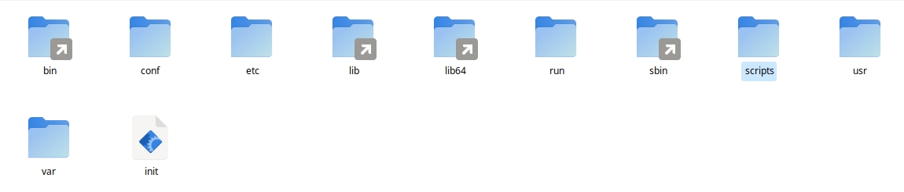

initramfs-tools Nedir¶
initramfs-tools, Debian tabanlı sistemlerde kullanılan bir araçtır ve initramfs (initial RAM file system) oluşturmak için kullanılır. Bu araç, sistem açılırken kullanılan geçici bir dosya sistemini oluşturur ve gerekli modülleri yükler. initramfs için farklı araçlarda kullanılabilir. Kullanıcı isterse kendi scriptinide kullanabilir. Debian dışında dracut aracıda initramfs oluşturmak ve güncellemek için kullanılabilir.
/etc/initramfs-tools/modules
modules dosyası initrd oluşturulma ve güncelleme durumunda isteğe bağlı olarak modullerin eklenmesisini ve initrd açıldığında modülün yüklenmesini istiyorsak /etc/initramfs-tools/modules komundaki dosyayı aşağıdaki gibi düzenlemeliyiz. Bu dosya içinde ext4, vfat ve diğer yardımcı moduller eklenmiş durumdadır.
### This file is the template for /etc/initramfs-tools/modules.
### It is not a configuration file itself.
###
# List of modules that you want to include in your initramfs.
# They will be loaded at boot time in the order below.
#
# Syntax: module_name [args ...]
#
# You must run update-initramfs(8) to effect this change.
#
# Examples:
#
# raid1
# sd_mod
vfat
fat
nls_cp437
nls_ascii
nls_utf8
ext4
initramfs-tools Ayarları¶
/usr/share/initramfs-tools/hooks/ konumundaki dosyaları dikkatlice düzenlemek gerekmektedir. Dosyaları alfabetik sırayla çalıştırdığı için busybox zzz-busybox şeklinde ayarlanmıştır.
initramfs-tools Güncelleme¶
/usr/sbin/update-initramfs -u -k $(uname -r) #initrd günceller
Güncelleme ve oluşturma aşamasında /usr/share/initramfs-tools/hooks/ konumundaki dosyarı çalıştırarak yeni initrd dosyasını oluşturacaktır. Oluşturma /var/tmp olacaktır. Ayrıca /boot/config-6.6.0-amd64 gibi sistemde kullanılan kernel versiyonuyla config dosyası olmalıdır. Burada verilen 6.6.0-amd64 örnek amaçlı verilmiştir.
initrd açılma Süreci¶
Sistemin açılması için vmlinuz, initrd.img ve grub.cfg dosyalarının olması yeterlidir. initrd.img sistemin açılma sürecini yürüten bir kernel yardımcı ön sistemidir. initrd.img açıldığında aşğıdaki gibi bir dizin yapısı olur. Bu dizinler içindeki script dizini çok önemlidir. Bu dizin içindeki scriptler belirli bir sırayla çalışarak sistemin açılması sağlanır.
{kind=link}
initrd script İçeriği¶
script içerindeki dizinler aşağıdaki gibidir. Bu dizinler içinde scriptler vardır. Bu dizinlerin içeriği sırayla şöyle çalışmaktadır.
init-top
init-premount
init-bottom
{kind=link}
Oluşan initrd.img dosyası sistemin açılmasını sağlayamıyorsa script açılış sürecini takip ederek sorunları çözebilirsiniz.